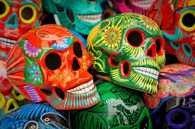
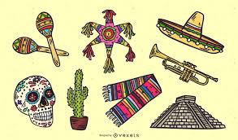
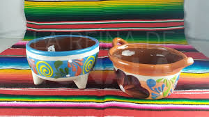
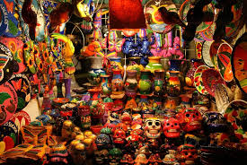

Cultura_material
Conjunto de objetos físicos y tangibles creados, usados o heredados por una sociedad.
Representa la forma en que un pueblo expresa sus conocimientos, creencias, tradiciones y nivel de desarrollo a
través de objetos palpables.
La cultura material es evidencia concreta de la historia e identidad de un grupo.
También abarca la arquitectura, como edificaciones religiosas, civiles y prehispánicas.
Incluye la vestimenta, que muestra la identidad regional, la creatividad y los recursos de cada comunidad.
Comprende herramientas, utensilios y objetos de uso cotidiano que perduran como símbolos de la vida diaria.




El arte en México plasma la historia y las luchas sociales, además de los símbolos de identidad nacional. Los murales de Rivera cuentan la vida del pueblo mexicano, mientras que las artesanías indígenas preservan técnicas ancestrales. Estos objetos no solo son estéticos, sino que transmiten mensajes culturales.
La arquitectura refleja el pensamiento y cosmovisión de quienes la construyeron. Las pirámides muestran la relación de los pueblos originarios con los astros y lo sagrado. Por otro lado, la Catedral Metropolitana representa el poder de la colonización y la fusión de estilos europeos con la mano indígena.
Cada prenda comunica simbolismos: colores, bordados y formas que representan el entorno, la cosmovisión y hasta el estatus social. El huipil es una prenda indígena elaborada con técnicas de telar tradicionales; el traje de charro se convirtió en un símbolo nacional; y la china poblana mezcla influencias indígenas, españolas y asiáticas.
Estos objetos muestran cómo el pueblo mexicano ha mantenido prácticas milenarias. Por ejemplo, el metate y el molcajete siguen usándose para preparar alimentos, lo que refleja continuidad cultural. La marimba y el guitarrón transmiten herencias musicales de distintas regiones y forman parte de celebraciones colectivas.
Arte – Murales de Diego Rivera, Frida Kahlo (pintura), artesanías de barro de Oaxaca.
Pirámides de Teotihuacán, Chichén Itzá, Catedral Metropolitana de la Ciudad de México.
Huipil, traje de charro, vestido de china poblana.
Metate, molcajete, comales de barro, instrumentos musicales (marimba, guitarrón).